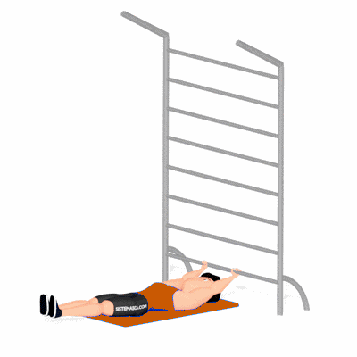

Flexão de Quadril

Exercício para fortalecimento do abdome e flexores do quadril, com ênfase no reto abdominal e oblíquos. Indicado para praticantes de musculação em todos os níveis.
Ficha Técnica
Tipo: Funcional
Grupo Muscular: Abdome
Aparelho: Nenhum
Músculos: Nenhum
Como realizar
- Deite-se de costas em um colchonete, segurando firme na barra ou apoio atrás da cabeça;
- Mantenha as pernas estendidas e juntas;
- Inspire e eleve as pernas em direção ao tronco, flexionando o quadril;
- Expire e retorne lentamente à posição inicial, controlando o movimento;
- Repita o exercício conforme a prescrição.
 RC STORE
RC STORE